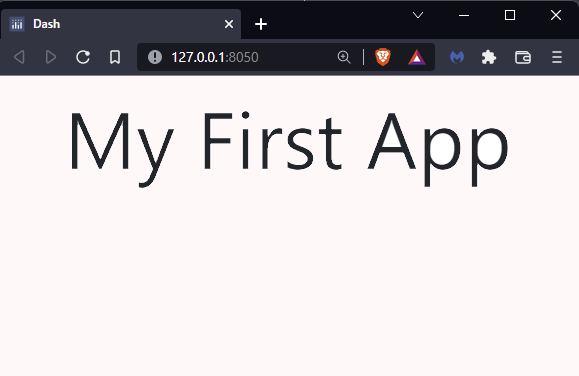
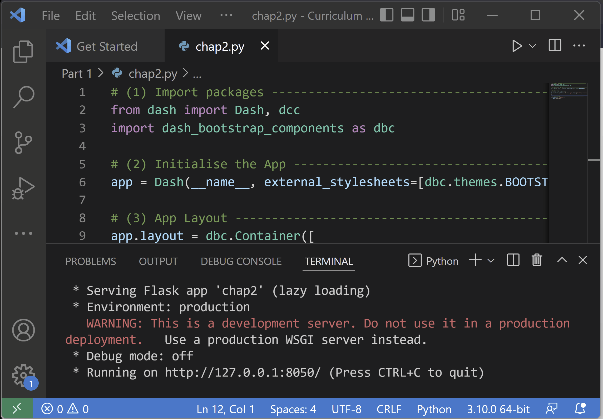

Chapter 2: Getting Started with Dash
Contents
Chapter 2: Getting Started with Dash#
What you will learn#
This chapter sets the foundation for the creation of Dash Applications. Starting from a minimal example, we’ll explain the structure of a Dash app and demonstrate how to set up your first app.
Learning Intentions
Structuring of Dash app
Running a Dash app
Interacting and updating an app
By the end of this chapter you will know how to build and launch this inital app on your local browser:

See Code
# 1. Import packages
from dash import Dash, dcc
import dash_bootstrap_components as dbc
# 2. Initialise the App
app = Dash(__name__, external_stylesheets=[dbc.themes.BOOTSTRAP])
# 3. App Layout
app.layout = dbc.Container([
dcc.Markdown(children='My First App', style={'textAlign': 'center'})
])
# 4. Run the App
if __name__ == '__main__':
app.run_server()
2.1 Structure of a Dash App#
Structuring your Dash app into the following sections will simplify the development of the app over time.
Import packages
Initialise the App
App Layout
Run the App
Next, we will walk through each of these sections and what they should contain.
2.1.1 Import packages#
from dash import Dash, dcc
import dash_bootstrap_components as dbc
When creating Dash apps, we will almost always use the two import statements above, so let’s examine each one in more detail:
Dash is the framework which is required to develop the app
dcc stands for dash_core_components which is a module that gives access to many interactive components that are used in Dash apps.
Via the dash_bootstrap_components module it is possible to incorporate design components from the HTML framework “Bootstrap” into the app. This makes it easier to customise the app layout and gives you access to additional components not found in Dash Core Components.
2.1.2 Initialise the App#
app = Dash(__name__, external_stylesheets=[dbc.themes.BOOTSTRAP])
In this section of the code, we initialise the app by creating a Dash instance, tell it to use Bootstrap for the design of the app, and assign it to a variable named “app”. This one line of code is pretty much static for any Dash app you create. In later chapters, we’ll talk more about external stylesheets and show you how to specify more properties to create more complex apps.
2.1.3 App Layout#
app.layout = dbc.Container([
dcc.Markdown(children='My First App', style={'textAlign': 'center'})
])
The app layout represents what will be displayed in the web browser. There are a lot of elements that you can include in the app layout, normally they are encapsulated into a “Container”. In this minimal example, one single component was added: dcc.Markdown. This Dash Core Component let’s you use Markdown syntax to format the text that is displayed on the page. This component has a few properties, such as children and style:
children: this is a common property shared by many Dash components and it allows the adding of textual content. In this Markdown component, “My First App” will be the content displayed on the web page.style: this is another common property shared by many Dash components and defines the look of the component. It requires a dictionary, where the key represents the styling feature you would like to modify, while the value represents how this feature would be modified. In this app, we want to modify the alignment of the text, by centering it.
2.1.4 Run the App#
if __name__ == '__main__':
app.run_server()
These lines are for running your app. A Dash server is launched which is required to keep the app up and running. The if statement makes sure that the app is not launched if we were to import the app as a module and is a Python convention for which an explanation goes beyond the scope of this curriculum.
Note
The “server” is referring to a Python process that runs locally on your computer. It will be accessible from our laptop only. In Chapter 5 we will see how to start this Python process on a web server (“deployment”), which is a computer in the cloud that let’s anyone access the page.
Once we have the full code ready and saved in a .py file (conventionally app.py but any name works), we need to launch it:

After launching the app, we will see the following console output:
Dash is running on http://127.0.0.1:8050/
* Serving Flask app 'chpater2-code1' (lazy loading)
* Environment: production
WARNING: This is a development server. Do not use it in a production deployment.
Use a production WSGI server instead.
* Debug mode: off
In order to display the app, click the URL shown in the console, or open the browser and navigate to the URL manually, in this case: http://127.0.0.1:8050/
2.2 Interacting with the App#
Once the app is launched and working, we can:
Stop the app: typing (‘Ctrl+C’ on Windows, ‘Command+C’ on Mac) in the console will stop the app (when using VS Code). This is sometimes helpful when trying to update an app or when running multiple apps at the same time. Dash apps automatically run on the same browser port 8050, unless specified otherwise. As a result, if we forgot to stop the first app and we launch a second app, with the same port number, we would simply see the first app over and over again.
Update the app: whenever we apply changes to the app code, we may first stop the app and re-launch it after making the changes in order to display the new version of the app. A quicker alternative can be to activate the “live updating”. Live update will refresh the app, from the browser, as you apply any modification to the app’s code. This way, you don’t need to stop the app prior to modifying the code. In order to activate this functionality, the statement to Launch the server should be modified to:
if __name__ == '__main__':
app.run_server(debug=True)
Attention
Make sure the live updating mode is deactivated (debug=False) before deploying the app. It is best practice to deactivate the debug mode, once the app is finalised
Now that you know how to create and launch your first basic app, try to play around with it:
Try to change the content of the Markdown component in your app
Try to add a new Markdown component with different content
Exercises#
(1) Use the app from the “What you will learn” section and change the title of the app to “New title”, aligning it to the left
See Solution
# 1. Import packages
from dash import Dash, dcc
import dash_bootstrap_components as dbc
# 2. Initialise the App
app = Dash(__name__, external_stylesheets=[dbc.themes.BOOTSTRAP])
# 3. App Layout
app.layout = dbc.Container([
dcc.Markdown(children='New title', style={'textAlign': 'left'})
])
# 4. Run the App
if __name__ == '__main__':
app.run_server()
(2) In addition to the above, use the .css style properties 'color':'red' to colour the title in red
See Solution
# 1. Import packages
from dash import Dash, dcc
import dash_bootstrap_components as dbc
# 2. Initialise the App
app = Dash(__name__, external_stylesheets=[dbc.themes.BOOTSTRAP])
# 3. App Layout
app.layout = dbc.Container([
dcc.Markdown(children='New title', style={'textAlign': 'left', 'color' : 'red'})
])
# 4. Run the App
if __name__ == '__main__':
app.run_server()
Summary#
In this chapter we learned what a Dash app is as well as its recommended structure. We have also explored each building block and their core properties. Finally, we learned how to launch the app, stop and update the app.
In the next chapter, we will discover additional Dash components and examine how to customise the layout.